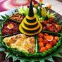

Javanese Food
Explore the vibrant world of delicious JaVanese street food, from savory Gudeg to sweet Terang Bulan.
Gudeg
Gudeg ussually contains rice and young jack fruit, Gudeg is a food that originates from Yogyakarta.
Lemper
Lemper is made from sticky rice and filled with meat floss.

Tumpeng
Cone-shaped rice, urap (vegetables boiled and mixed with seasoned grated coconut), etc.